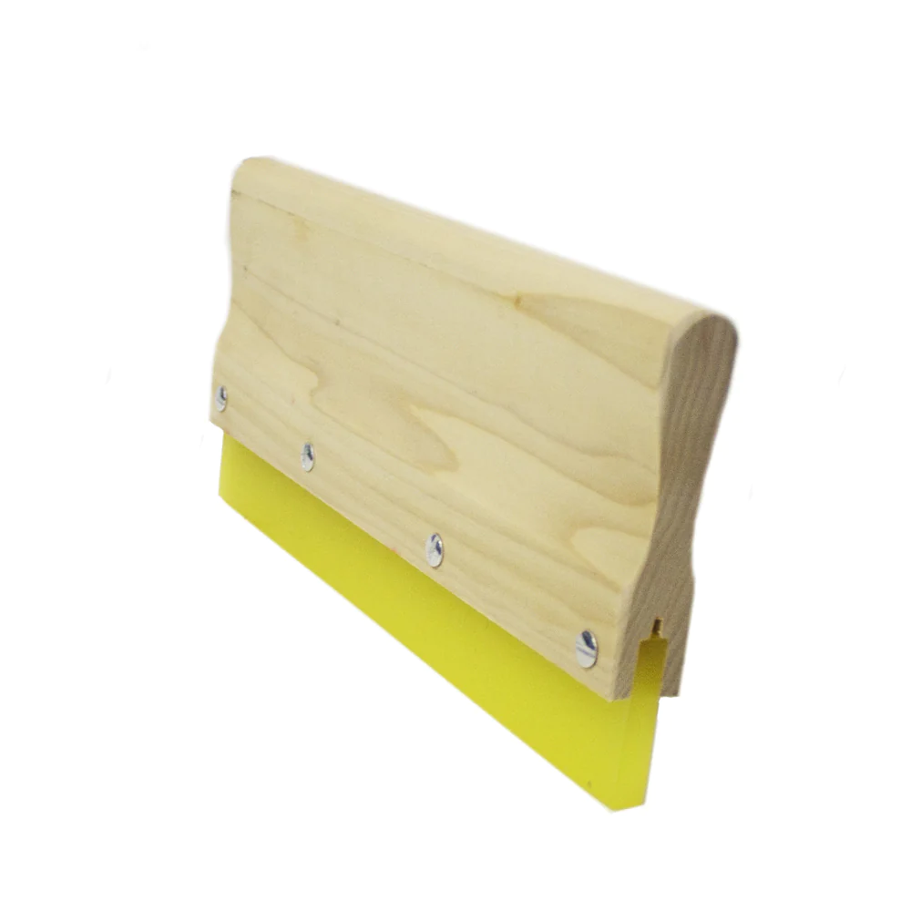
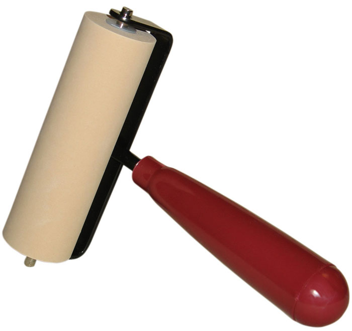
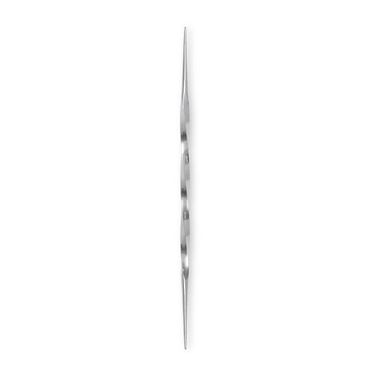
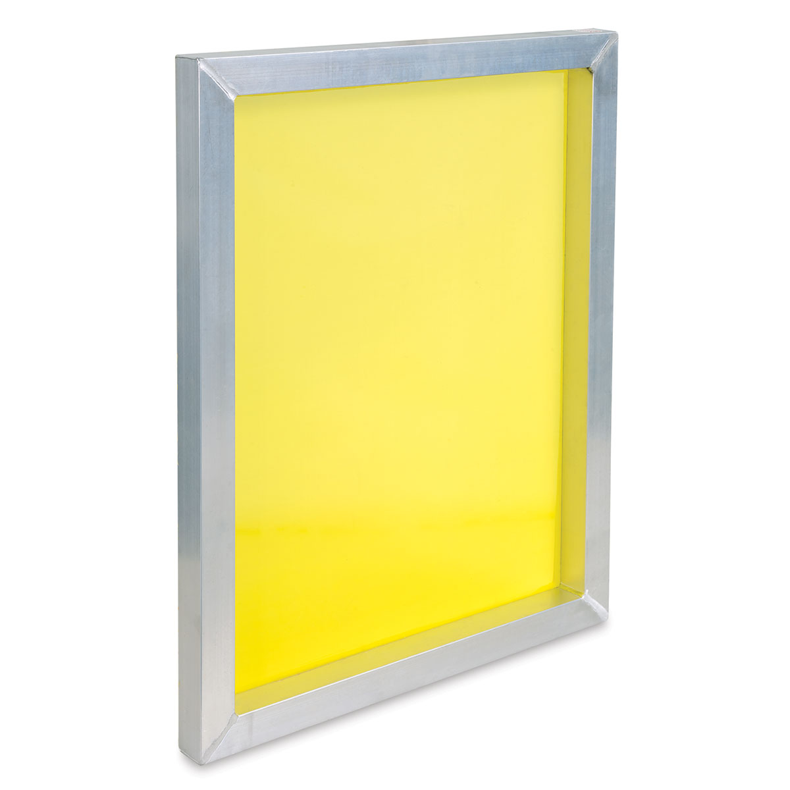
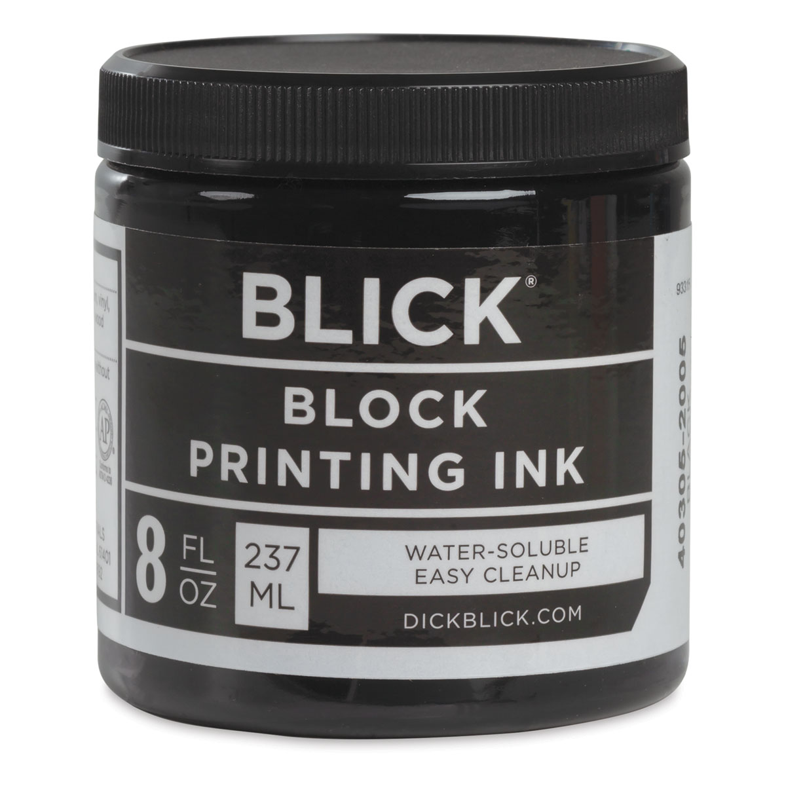
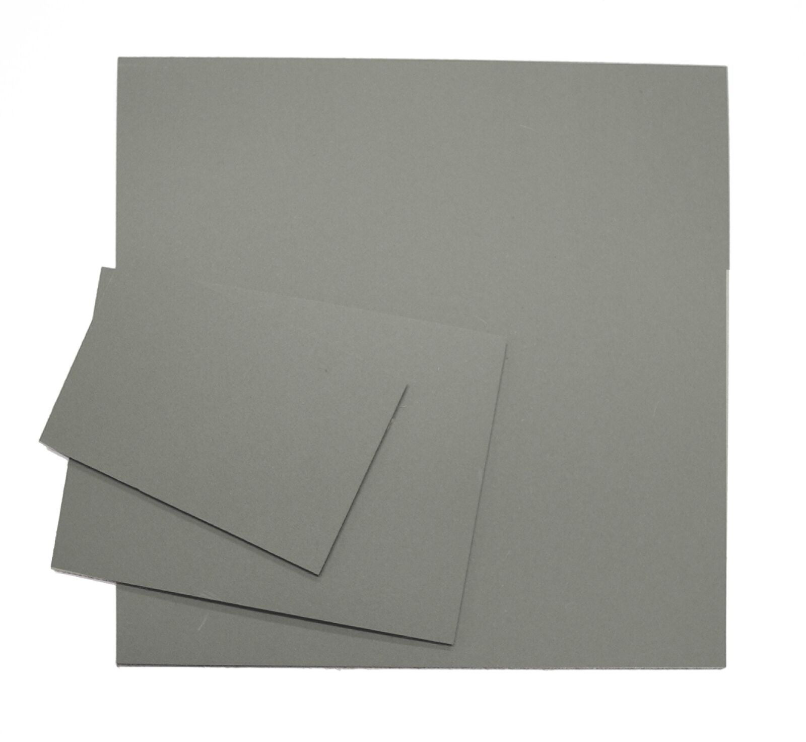
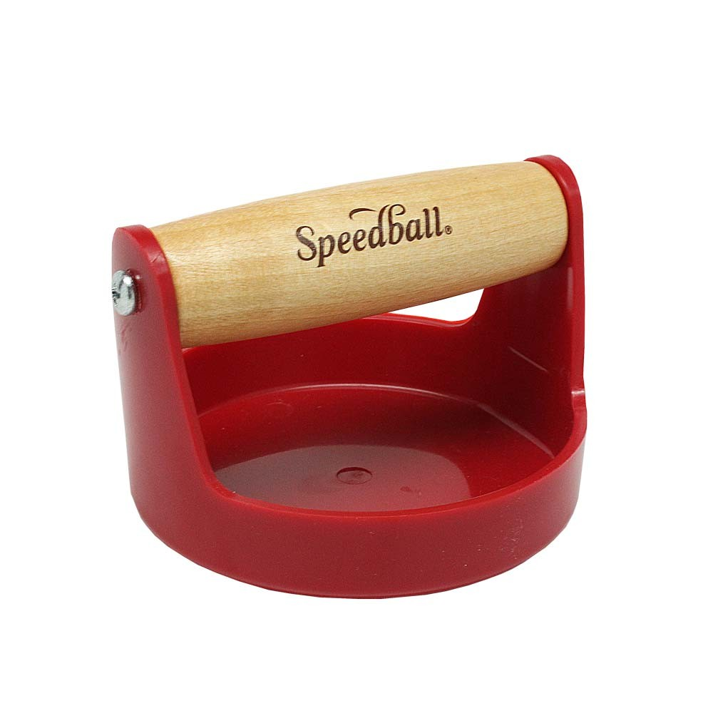

This is a brief list of tools and/or supplies that are often used in various forms
of printmaking.
Depending on the technique of printing you are attempting, the tools will differ.
| Tool | Name | Purpose | Print Technique |
|---|---|---|---|
|  | Squeegee | The squeegee is used to pull ink back and forth across a screen |
Screen Printing |
|  | Brayer | A brayer is used to roll ink over a plate, linocut or woodcut. Any surface that is being used to print, as it provides a reliably even coat of ink. | Various |
|  | Etching Tool | An etching tool is used to carve out your desired drawing onto a printing plate usually used for some form of intaglio printmaking. | Intaglio |
|  | Mesh Screen | Different mesh sizes are used for different applications in the screen printing process. Mesh size is measured by how many threads of mesh cross per square inch. | Screen Printing |
|  | Block Printing Ink | Block printing ink is mainly used for woodblocks, but can be used across multiple forms of printmaking. It is substantially thicker than traditional ink. | Various |

|
Etching Press | An etching press is used to roll out the print itself, where the intaglio plate is placed between a layer of padding and on top of your paper. | Intaglio |
|  | Linoleum | Linoleum is used as a vessel to carve into, similar to a woodblock. Essentially a material to carve your own stamps! | Block Printing |

|
Printing Paper | Print paper! Pretty self explanatory. | Various |

|
Tarlatan | Tarlatan is a stiff mesh that is used to wipe plates in intaglio printing in order to remove excess ink from the surface and push the remaining ink into the divets. | Intaglio |
|  | Baren Press | Great for block printing and other burnishing and printing applications. | Woodblock |